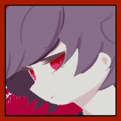
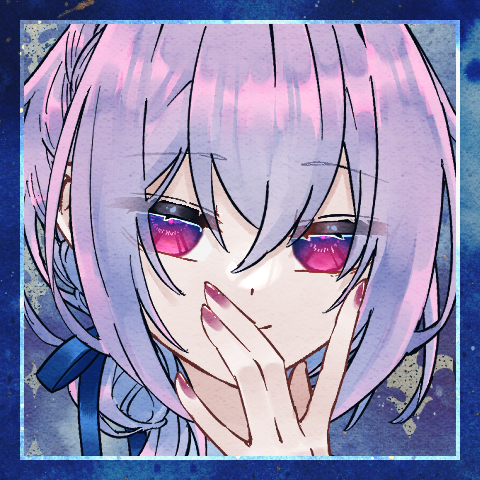

GM
「赤いくつをはいて、踊っておれ。お前が青じろくなって冷たくなるまで、お前のからだがしなびきって、骸骨になってしまうまで踊っておれ。お前はこうまんな、いばったこどもらが住んでいる家を一軒、一軒と踊りまわらねばならん。それはこどもらがお前の居ることを知って、きみわるがるように、お前はその家の戸を叩かなくてはならないのだ。それ、お前は踊らなくてはならんぞ。踊るのだぞ――。」
GM
あの裁判からしばらくの間、四人は旅を続けていた。
GM
強大な救世主や亡者との裁判をくぐり抜け、気がつけば、ひとかどの救世主一行となっていた。
GM
エールさんは今回のシナリオに参加する動機として依頼を含めていますが、懇意としている組織に希望はありますか？
GM
では、みなさんは公爵家の所有する屋敷に呼びつけられ、仕事の依頼をされています。
GM
「赤い靴」とは、聖遺物に相当する不思議の品である。履いた者に際限なく力を与えるが、徐々に心身を支配していく。
GM
ある救世主一味が所有していたが、一月前に内輪揉めにより全滅。赤い靴は救世主のうち一人の身体に寄生し、現在は王家の庭園を彷徨っているらしい。
GM
知っていても知らなくても構いません。こういったことを説明してくれます。
エール
与太話の多すぎる堕落の国のことだからなあ。
エール
初耳かも。初耳ですか？ わかりません。
三人の顔を見ましょう。
ラサ
適当な相槌を打ちながら、なんとはなしに自分の足元を見ている。
センバ
「なんか呪いの装備品って感じですね」
やな感じだなあの顔
ラサ
転移させられたときと同じ、何の変哲もない茶色のローファーだ。
クラレット
「そう……」
少しばかり思案するような顔で相槌を打つ。堕落の国で新調したストラップシューズを見下ろした。
ラサ
「名前だけは聞いたことあるなあ。といっても、元の世界でだけど」
エール
事あるごとに同行者の顔を窺う癖がある。
まともに足を守れる靴を履くようになりました。
センバ
スニーカーを履いている。
「おとぎ話にそんなのあったかも」
ラサ
「履いたが最後、死ぬまで踊り続けなければいけない、って靴」
GM
「ラサ様の知る赤い靴の伝承に加え、この赤い靴には、比類なき猟奇の力が与えられる、というものがありますね」
GM
「私も直接見たわけではありませんが、聞くところによると、履きし者は象のごとき脚力を得て、救世主や亡者の首を簡単に蹴り飛ばすのだとか……」
GM
「それが誰の管理にもなく独立して動いているというのは、看過されざる事態」
GM
というわけで、公爵家の者はあなたたちに赤い靴の入手を依頼します。
GM
ちなみにここで依頼を断ってもらっても、シナリオは進みます。
ラサ
「大丈夫なのかなあ。聞く感じ始祖とかエース級だったりしない？ それ」
ラサ
「ボクたちを消す公爵家の陰謀かもしれないよ」
エール
「うーん」考え込む。ラサはそういうとこあるので、今更慌てませんが。
クラレット
「まあ、いつ王家の庭から飛び出してくるやもしれないというのは、困ることだけれど……」
エール
「様子見だとか……偵察までの範囲なら、というのは」
どうだろうか、と、これは仲間たちに。
エール
「クラレットの言う通り、いつ飛び出してきて遭遇するとも分からないし……」
クラレット
「偵察で済むかも分からないけどね……」
ラサ
「まあ、赤い靴が救世主カウントされるなら、責務をクリアするにはちょうどいいとは言えるかも」
クラレット
気乗りはしないが、断固として断るほどの理由も感情もなく。ならば仲間たちに従うのみだ。
クラレット
「これ今どうなってる？ 多数決で行く方かしら？」
クラレット
なんかみんな様子見みたいな顔してるなと気づいた。
クラレット
たまには様子見してみようと思ったらこのざまよ。この人たち本当に主体性がないわ。
エール
ふわ……ふわ……とした意見は出すんですが。
クラレット
エールの態度、腹立つわね……（言わない）
センバ
主体性なし人間だ、その場の空気を読んでいる。
ひとりで空気読みエクストリーム。
ラサ
「じゃ、エールの案を採用して、偵察ってことにしますか」
センバ
「任せて下さい、有耶無耶にできます、何もかも」
クラレット
「まあね……堕落の国で希望を持って生きるなんてできやしないし」
クラレット
「いつだって緩慢な自殺。今回は華々しい最期を飾れるかしら？」
GM
というわけでみなさんは庭園へと旅立つことになりました。
GM
庭園まではまあまあ遠いので、大廊下というワープゾーンを経由して向かうことになります。
GM
大廊下を抜け、庭園まであと一日歩けば着くかな、といったところで野営をすることになりました。
GM
PC三人のうち、誰か一人がなんとなく寝付けなくて、目を覚まして起き上がります。
ラサ
目を開くと、ラサが自分の荷物をいじくっているのが見える。
センバ
「う、うーん……？」
物音で目を覚ました。様子をうかがう。
ラサ
交代で見張りをしていて、ラサの番だったのだ。
センバ
「珍しいですね。なんか多淵さん忘れ物とかしても『今は必要なかっただけのことだよ』とか言いそうなのに」
センバ
「自信があって、堂々としてて、頼りになって……ちょっと疑り深くて、過激な所があって、……まあまあ長い付き合いの女子……」
センバ
ぎゃ、逆！？てことは……自身が無くて頼りがいが無くて疑うことがなくて穏当で……
ラサ
「しみじみ君って風格とかつかないな、って思ってる」
センバ
「う……そう言われると……そうですね。なんか……ずっと必死でやってきてるっていうか、余裕ないって言うか……」
センバ
「エールさんの時も正直ヤバかったですよね。今じゃ仲間ですけど」
ラサ
「ヤバかったどころか何かの間違いで生きてるって感じ」
ラサ
「どうやらこの世界はボクたちに生き延びてほしいらしい……これもまた陰謀だな」
センバ
「……何か変わんないですね、多淵さんも」
言いつつ笑った。そういう変わらない所が頼れる所だと思っている。
センバ
「え、え”っ、俺の知らない所で実は悪に染まってて裏切るチャンスを伺ってるとか無しですよ」
センバ
「裏切る時は一撃で俺がわかんないうちに終わらせてくださいよ、なんか多淵さんが裏切るかもって思うと……ちょい嫌だし……あー……あー……」
ラサ
「生き延びれば生き延びるほど、その日は近づくんだぞ」
センバ
「……まあ。知らないつもりではないですけど」
ラサ
「今だって、わざわざヤバい相手と裁判するかも、ってなってんのはさ」
ラサ
雑魚狩りなんてしたってマジでしょうがないからな、この世界。
センバ
「夏休みの宿題の事とか、後回しにしたいってのと多分同じです、許されるなら出さずになあなあで誤魔化したいですよ」
ラサ
「君って死ぬ寸前まで、なんとか後回しにできないかなって思ってそう」
ラサ
「それはまあ、君のいいところではあるとも思ってるし……」
センバ
「まあ、どうせいつか終わるし、誰か別の人が出来るなら……あんま頑張らずにどうにかしたいんですよ」
ラサ
「じゃあ、ボクと裁判することになっても、それぐらいの感じでいなよ」
ラサ
「そろそろ休みなよ。無駄話ばっかりしてると、明日に響くぞ」
センバ
「緊張してるなら、手にあれ、アレ書いて飲むといいですよ！！」
センバ
ああ、クソ、なんだっけ？何書いて飲んだらいいんだったっけ。
マズい、俺はどうしてこんな時も思いつかないんだ。
いや、言わなきゃ良かったんじゃないか？これ！いや。でも。
センバ
「うっさいなあもう……普段通りに居て下さいよ、頼りにしてるんですから」
センバ
言いつつ眠りに戻っていく。休まないといけないのは事実だし。
GM
センバが目を閉じると、ラサは再び荷物をあさり出す。
GM
眩いばかりの色とりどりの花壇、冷たく澄んだ水を湛えた噴水、赤いバラの花をつけた巨大な樹。
GM
ラサの痕跡が、ラサの居場所が王家の庭園であることを示していた。
エール
美しい庭園だ。堕落の国にある光景とは思えない。
センバ
「……多淵さん、先に行っちゃったみたいで……その……」
センバ
責任を感じているが同時にどうにか誤魔化して俺のせいじゃないですと言いたい気持ちもある。
GM
この庭園は、フラミンゴの亡者や庭師の亡者が闊歩する、危険な迷宮でもある。
エール
誰のせいとかじゃあない。
その後の交代はわたしだったし。
センバ
「誰かが通った後みたいな……誰かが狩り尽くした後みたいな」
エール
ラサひとりでそれが為されるはずもないが。
自分たちはとある噂を聞いている。
センバ
「いくら多淵さんが凄くても……相手の数考えるとですよ」
クラレット
「赤い靴は全滅した救世主の一人に寄生していると言われていたけど……」
クラレット
「寄生された救世主がやったのか、それとも……」
クラレット
追います。少なくともクラレット一人は。
センバ
追います。やはり知り合いを見捨てるのは寝覚めが悪いのです。
GM
凄まじい速度で、なにか球状のものがあなたたちめがけて飛んでくる。
エール
二人を庇う形に飛び出して、それを腕で受ける。
少女
飛んできた方向を見やれば、そこには人影がある。
エール
自分の腕に当たって弾けた肉塊が、地面へと落ちる。
少女
しかしそんなものよりも、もっと目を引くものがあった。
少女
「何日か数えるのが面倒だから、見つけ次第達成するようにしてるの」
クラレット
「その子は多渕ラサ。あたしたちの仲間よ」
エール
コートについた血を払って、少女の姿へと向き直る。
センバ
思考は凍り付いている。呆然としている。考える隙間は無い。
センバ
ただ。目を閉じることはない。見ている。
目を逸らさない。それが唯一の成長。悪化でもある。
その中で目の前の少女に対する結論を無理に出そうとする。
センバ
結論という逃げ道。それは。
「一度、引きませんか」

エール
痺れる腕を庇いながら、センバへと視線を向けた。
クラレット
「……」
嘆息を一つ。それから、頷いた。
センバ
「引きますよ」
先延ばしで、課題の延長でしかない事くらい、俺もわかってる。
クラレット
怒り、困惑、恐怖。
それらすべてを目の奥に隠して。
クラレット
「“積もる話を片付けるために、お茶会を”」
エール
クラレットの言霊の紡がれる一方に、少女から距離を取っている。
二人を庇える立ち位置のままに。
センバ
隙があるなら、逃げなくてはならない。
それが今の最善の行動だと信じて。
エール
その弛緩を読み取って踵を返す。
二人もそうすると知っているから。
クラレット
白と黒のエプロンドレスが靡いていく。
次の裁判が終わるころには、ラサも装備を新調してもいいかもしれない、なんて話していた。
クラレット
こんなものになってほしかったわけじゃないのに。
“赤い靴”
その一瞬で、三人は手の──脚の届かないところに行ってしまった。
“赤い靴”
──もっとも、逃げるつもりもないみたいだけど。
クラレット
＊ティーセットの1つをエールに譲渡します
[ クラレット ] ティーセット : 2 → 1
エール
＊ヤリイカエリートを１コセンバくんに譲渡。
クラレットさんからティーセットを１コ受け取ります
[ エール ] ヤリイカエリート : 2 → 1
[ センバ ] ヤリイカエリート : 0 → 1
[ エール ] ティーセット : 0 → 1
GM
お茶会は庭園でPKから逃げたり追ったりして進行します。
GM
よかったら庭園シーン表をお使いください（1d6）
クラレット
1D6 庭園シーン表 (1D6) ＞ 3
GM
3 ガゼボのある一角。ここなら休息できるかもしれない。
クラレット
果たして本当に休息できるんでしょうか？
クラレット
まあ、とにかく誘い出さないことには始まらないでしょう。ガゼボで堂々と休んで赤い靴が来るのを待ちます。
“赤い靴”
じゃあ、茂みを蹴り破ってまっすぐやってきます。
クラレット
他の仲間たちには茂みに隠れててもらっていたんですが大丈夫？ 居ない方の茂みだったよね？
“赤い靴”
すぐには攻撃しない。さっきの技を警戒している。
クラレット
「まあね。救世主の裁判の前にはお茶会がつきものよ」
クラレット
先程の険しい顔は消えて、落ち着いた笑みを返す。
クラレット
「あなただってそうでしょう。他の救世主を出合い頭に蹴り殺すことなんてなかなかできないはず」
クラレット
「この庭園に来られる程度に力のある救世主なら、流石にね」
“赤い靴”
「末期の言葉ぐらいは聞いてあげてもいいわよ。そこまで残酷ではないから」
“赤い靴”
一定の距離を保って歩いている。いつでも攻撃に入れる圏内。
“赤い靴”
「さっさと蹴り殺せるなら、それに越したことはないわね」
クラレット
赤い靴が鈍い陽光にかがやいている。
濁った血に濡れてなお、鮮やかにつやめいている。
クラレット
「最期の言葉はいいけど、あなたのことを聞かせてくれない？」
クラレット
「どこから来たの？ どうやって過ごしているの？ 何が目標なの？」
“赤い靴”
「ある程度は知っているでしょう？ “赤い靴”について」
クラレット
「ある程度でしかないわよ。前の持ち主の詳細も聞いていないし、出処がどこなのかも分からないし……」

クラレット
「お茶の一杯くらいは淹れてあげるから、どれか一つくらいは聞かせてくれていいんじゃない？」
“赤い靴”
「ただ……“踊る”ための靴でしかない」
クラレット
「……まあ、目的は少しくらいはっきりしたかもね」
クラレット
「“踊る”ためなら誰でもいいの？ 誰が履いても？」
“赤い靴”
「あなたって凶器にはこだわるタイプ？」
クラレット
「拘らない方だからお揃いね。別に使えるならナイフでも斧でも靴でも何でもいいわよ」
クラレット
「あたしたち、あなたの“回収”を依頼されてきたの」
クラレット
赤い靴の攻撃が届く範囲。それに一歩、一歩と近づいて。
“赤い靴”
つま先が円の軌道を描いて、あなたの首を刈りにかかる。
クラレット
完全に止めることはできはしないだろう。それでも身体は軋む。
“赤い靴”
止められ、届かずとも何度も攻撃を繰り返す。
クラレット
「あたしの脚と仲良くはしてくれないの？」
“赤い靴”
「あなたの脚以外とは、仲良くする必要はないの」
クラレット
「ふうん……肉体が損傷しても使えるの？」
“赤い靴”
「試して駄目だったら、別の身体を待つだけね」
クラレット
「じゃあ、ラサの身体で試してはいないのね？」
“赤い靴”
しかし、致命的な損傷があるようには見えなかった。
クラレット
「あのね、あたし、あなたを履きたいのは本当よ」
クラレット
「だって、そうしたらラサが戻ってくるかもしれないんだから」
クラレット
この靴は、どのような道程を経てここに在るのだろう。
クラレット
その道中で、こうして対話したひとは如何ほどだろう。
クラレット
教えてもらえないものは、想像もできない。
クラレット
険しい言葉が、不理解から来るのか、理解の裏返しなのかすら。
“赤い靴”
「そんなものを大切にしているから、死ぬのよ」
クラレット
苛立ちが伝染したようでもあるし、煽りに堪えかねてのことのようでもあった。
クラレット
「仲間を……家族を、大切にしないで生きることに何の価値があるの？」
クラレット
「あたしは、ラサを見捨てるくらいならここで一緒に死ぬ！」
クラレット
「……あなたには、解らないでしょうけど！」
“赤い靴”
choice[猟奇,才覚,愛] (choice[猟奇,才覚,愛]) ＞ 愛
“赤い靴”
2d6+3>=7 愛判定 (2D6+3>=7) ＞ 9[5,4]+3 ＞ 12 ＞ 成功
[ “赤い靴” ] ラストヤリイカ : 2 → 1
[ クラレット ] ティーセット : 1 → 0
[ “赤い靴” ] HP : 21 → 20
クラレット
2d6+4-8+2=>7 判定（＋才覚－横槍＋ティーセット） (2D6+4-8+2>=7) ＞ 9[4,5]+4-8+2 ＞ 7 ＞ 成功
[ “赤い靴” ] 疵:仲間 : 0 → -1
“赤い靴”
断頭斧のように振り下ろされた脚は狙いがそれ──
クラレット
脅し、ではないだろう。そのような性格ではなさそうだから、狙いが逸れた？
“赤い靴”
今度は死神の鎌のような横薙ぎが、狙い過たず振るわれ──
センバ
そして、自明ではあることだが。
一人で三人に勝つことは難しい。
だから俺たちは待っていた、割って入れる瞬間を。
エール
仲間が十分にその疵を探り、暴き立て、露わにする成果を。
確かめたのならば、もう十二分。
エール
疵のままに振るわれる力を、疵の力で受け止める。
センバ
そしてクラレさんの手を引く。
今出来る事は十分した、ハズですよね。
エール
「……ご承知、だったろうに」
分かっていても痛いな。流石に。息を抑えながら。
クラレット
「じゃあね、“赤い靴”。あたしの足にぴったりなことを祈ってるわ」
GM
5 女王のクロケー場。フラミンゴの亡者が首を狙っている。
GM
実際にはフラミンゴの亡者だったものが転がっています。
センバ
どれも既に事切れた後の姿だ。彼女の仕業だというのか。これが。
センバ
次は俺がやる、とカッコつけたのは良いんだけど。
エール
殿でクラレットを気遣いながら周辺を警戒している。
“赤い靴”
蹴り飛ばされたものと思しき肉塊が三人目掛けて飛来する。
エール
クラレットに向けられたものから優先して叩き落とす。
エール
肉塊の潰れる嫌な感触が腕に伝わるが、それだけだ。
“赤い靴”
おびただしい腐敗臭と血臭があたりに漂う。亡者の肉片だ。
クラレット
エールが叩き落すのを見守るのみ。いつもの光景だ。
センバ
「……まだお茶会って事に、なってますから」
センバ
「じゃあ、殴り合いでもしますか。赤い靴さん」
センバ
「……俺たちを倒したら次はどうするんですか」
“赤い靴”
「このゲームは最後の一人になるまで終わらないみたいだし」
“赤い靴”
「“踊る”以外の手段を、私は知らないもの」
“赤い靴”
「自分の履いてる靴に毎日話しかけてみたら」
“赤い靴”
「ある日、突然気さくに喋りはじめちゃったりして」
センバ
バットを手に取った。
ふざけるな。靴が喋るなよ。そんなことあり得る訳がない！！
“赤い靴”
「あなたの都合の良い現実を、押し付けてみなさいよ」
センバ
寝て起きたら普通に明日が始まって。
空想やファンタジーのような、自然現象であり得ないことは存在しない。
センバ
そんな都合の良い考えを俺は押し付けるようにして足下を狙う。
“赤い靴”
「そいつを倒せば、あなたのお友達は帰ってくる？」
センバ
「俺の世界じゃ靴は喋らない。魔法は無いし、漫画の出来事」
“赤い靴”
「あなたの世界では、そんなに確かなものなのかしら」
センバ
思考停止。俺は都合の悪い言葉を受け止めない。
センバ
クソつまんねえくせに、一番強固な顔して寄って来る。
センバ
「探しますよ。多淵さん遅いな、まだ戻って来ないのかなって」
センバ
現実に縋り付いているくせして、都合の良い時だけ現実逃避するんだ。
センバ
脛を狙った。足先ばかりは狙えない。そもそも、避けるにも受けるにも。
“赤い靴”
「狙うなら頭のほうがいいんじゃない？」
“赤い靴”
潜るように上体を沈め、水面蹴りを放つ。
センバ
爪先は狂気。
凶器であり狂気。
水面を滑るような動き。
それを見て受け止めにかかり、
センバ
起き上がる。
普通ならば死んでいただろう。
俺も結局、普通の人間では居られない。
センバ
「身体が捩れて、足が壊れて、血肉が軋んでも？」
センバ
「身体が壊れても続けるなら、制御なんて出来てない」
“赤い靴”
「踊りの果てに、自らを失うとも知らずに」
センバ
勝手な想像だ。この人は、違う。違うと信じている。
違うんだ。
センバ
「俺は、そんな力なら終わりにした方がいいと思いますよ」
“赤い靴”
choice[猟奇,才覚,愛] (choice[猟奇,才覚,愛]) ＞ 愛
“赤い靴”
2d6+3>=7 愛判定] (2D6+3>=7) ＞ 4[3,1]+3 ＞ 7 ＞ 成功
[ “赤い靴” ] HP : 20 → 19
[ センバ ] ティーセット : 1 → 0
センバ
2d6+4=>7-1+2 判定（＋猟奇） (2D6+4>=8) ＞ 7[2,5]+4 ＞ 11 ＞ 成功
センバ
「行動に出すの、あんま得意じゃないんです」
“赤い靴”
手でそれを受け止める。指の骨の折れる小さな音がした。
センバ
少し嬉しく思ってしまう。
俺も結局、変わらずには居られない。
センバ
ああ、そうだよ。主人公みたいだろ。これ。
カッコつけやがって。
[ “赤い靴” ] 疵:力 : 0 → -1
センバ
ただ、そう思わないとやってられないんだよ。もう。
GM
それを追う過程で、庭園の大樹が嫌な音を立てて、三人に倒れかかってくる。
エール
クラレットを庇う。センバは自分でなんとかできるだろう。
GM
特にダメージは受けなくていいですが、いろいろあって分断されます。
エール
「っ…………」混乱の中に、背に庇っていたはずの彼女を見失い。
クラレット
「生きてるわ」
大樹の向こう側に向かって声を掛ける。
クラレット
「ただ、……」
目の前に横たわる機の大きさたるや。
「そっちに行くのは時間がかかりそうね」
“赤い靴”
話しているうちに、靴音がクラレットへと近づいてくる。
エール
「じゃあ、すぐに――」と言いたいところだが。
本当に大きすぎる。
センバ
「跳んで登るにしても迂回するにしても遠すぎますよ」
エール
脅威度５の救世主を分断する規模。
声届いてんのスゲエかも。
クラレット
声も疵の力かなんかのおかげかもしれません。
GM
あんま細かく突っ込まんといて 話の都合だから
センバ
「とにかく早く合流した方がいいですよ……ッ」
エール
「……私は登るのを試す。
センバは迂回できる？」
クラレット
二人の相談は、流石に聞こえない程度には離れているだろう。
今はただ、近づく足音に注意を向けるのみ。
エール
言うやいなや、木の幹に取りついて登り始めます。
“赤い靴”
とん、と跳んで庭園に積み上がった瓦礫の上からクラレットを見下ろす。
クラレット
「そろそろラサを返す気はないかしら？」
クラレット
「もちろんあなたとの逢瀬も期待してるわ」
クラレット
「あたしの家じゃそんなの履く機会なんてなかったから」
“赤い靴”
「はじめからこの装いだったわけではないわね」
“赤い靴”
「最初はみすぼらしい見かけのものだった」
“赤い靴”
「年老いた、靴屋の女が古い羅紗（ラシャ）を縫って、作った不格好な一足の靴」
クラレット
「それがどうして、こんなに鮮やかなものに？」
“赤い靴”
「ずっと昔のことだったから、細かいことは忘れてしまったな」
“赤い靴”
「あるいは、どこかで混ざってしまったのか……」
クラレット
「似たような話が沢山の世界に在るという」
クラレット
「それらが混ざったのか、それとも……」
“赤い靴”
「誰かから見れば、ひどくみすぼらしいものでも」
“赤い靴”
「誰かの心を奪い、呪いを育てるには充分だったということだけが、確かだった」
“赤い靴”
「やさしさから、裸足の孤児に靴を与えなければ……」
“赤い靴”
「あなたたちの物語は、なにをきっかけに始まった？」
“赤い靴”
「ラサ、と呼ばれたかわいそうな子が、私のところへとやってきた時に？」
クラレット
「ひとはそれぞれ物語を持つ。あたしたちのうちの誰かの物語が始まったときを話すなら、際限がないわね」
クラレット
「いい加減、反抗期はやめてあたしたちと仲良くしてくれないかしら？」
クラレット
「ふふっ、さっきのセンバの話を根に持ってる」
“赤い靴”
「どこまで行っても靴は踊るだけの存在……」
“赤い靴”
「それが結果として誰かを活かすこともあれば」
“赤い靴”
「仲良くできていたと、ほんとうに思っているのかしら？」
クラレット
「あなたが知ったことじゃないでしょう」
“赤い靴”
「教えてほしいのよね。私にもわからないから」
“赤い靴”
「たった一人で、私のところに、来たのかしら？」
“赤い靴”
だってあなたたちは、仲間なんですから。
エール
Choice[猟奇,才覚,愛] (choice[猟奇,才覚,愛]) ＞ 猟奇
エール
2d6+3=>7 判定（＋猟奇） (2D6+3>=7) ＞ 6[2,4]+3 ＞ 9 ＞ 成功
エール
＊ヤリイカエリートを使用します・・・・・・・
[ エール ] HP : 26 → 25
[ エール ] ヤリイカエリート : 1 → 0
[ “赤い靴” ] 手袋 : 2 → 1
“赤い靴”
2d6+5-5+2>=7 才覚判定 (2D6+5-5+2>=7) ＞ 11[5,6]+5-5+2 ＞ 13 ＞ 成功
クラレット
最後に話したのはセンバだという。確か緊張していると話していたとか言っていたか。
クラレット
それが本当なのかは分からない。何か思惑があって嘘を吐いたのかもしれない。
“赤い靴”
「愛や憎しみという不純なものを脱ぎ捨てて」
“赤い靴”
円を描く軌道で、赤い靴がクラレットに迫る。
“赤い靴”
「それが、私の与えられる、たった一つの救い！」
クラレット
一人では、非力な女でしかない。六ペンスコインの力で、死は免れるだけ。
クラレット
身体は軽々と吹っ飛び、瓦礫にぶつかる。
クラレット
「今のは……ッ、……あなたが考えさせるから、じゃない」
クラレット
胸倉を掴まれて、息が詰まる。それでも口端に笑みを作る。
クラレット
「もう少し初歩的なステップから教えてくださらない？」
“赤い靴”
「手取り足取り覚えさせてあげるもの……いや、“足取り足取り”かな？」
“赤い靴”
指が折れたままの手で髪を掴み、瓦礫だらけの地面に叩きつける。
“赤い靴”
「ご自慢の頭も、うまく動かないかしら……」
クラレット
揺れてぶれて真っ白になる頭を何とか働かせようと呻く。
“赤い靴”
「その才覚の無力さを強く味わったものこそが──」
クラレット
奥歯を噛み締め、隙間から獣のように唸り声を漏らす。
センバ
息が切れている。遠回りをして、幾つもの幹を越えた。
幾つもの枝を踏み崩した。幾つもの葉を靴裏で擦り潰した。
クラレット
たやすく翻弄され、踊るように吹き飛ばされ、踏み躙られる姿。
センバ
踊っていた。踊っている。踊らされている。
無事なのは片方だけ。どちらも無事ではないとも言える。
センバ
俺は目を閉じなかった。
踊りは終わりだ、俺が終わらせる。
センバ
それが日常に戻る方法だと信じて。
靴を、その舞踏を、止めるために暴力を振りかざす。
“赤い靴”
腕を盾にして受ける。みしり、という嫌な感触。
エール
靴の気の逸れた隙を掻い潜って、血濡れのクラレットを引き剥がす。
センバ
もう一度、バットを振りかざす。一方的に潰すように。
エール
センバに少し遅れて大樹の幹から飛び降りていた。
どうしようもない手遅れぶりに唇を噛みながら。
エール
「クラレット――」なにがしか、呼びかけはするが。
エール
腕の中の仲間には届いていない。
彼女が聞くのは別の声だけ。
センバ
何でも良い。何でもいい。なんでもいい。
俺はどうしてを考えない。考えたくはない。
[ クラレット ] 賢しらな瞳 : 0 → -1